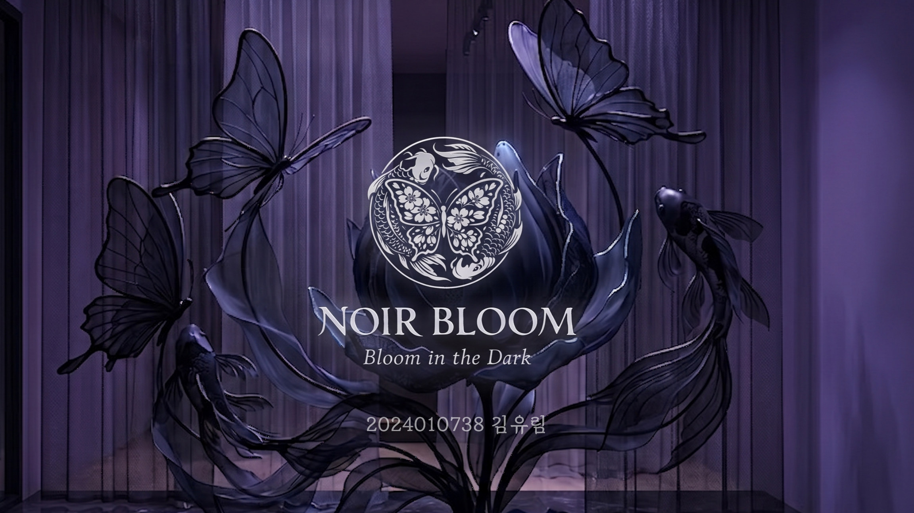
PROJECTBeauty Creator · Design Student
Everyday,
Pretty moments
좋아하는 뷰티를 나만의 시선과 감각으로 기록합니다.
김유림의 맑고 반짝이는 뷰티 무드.
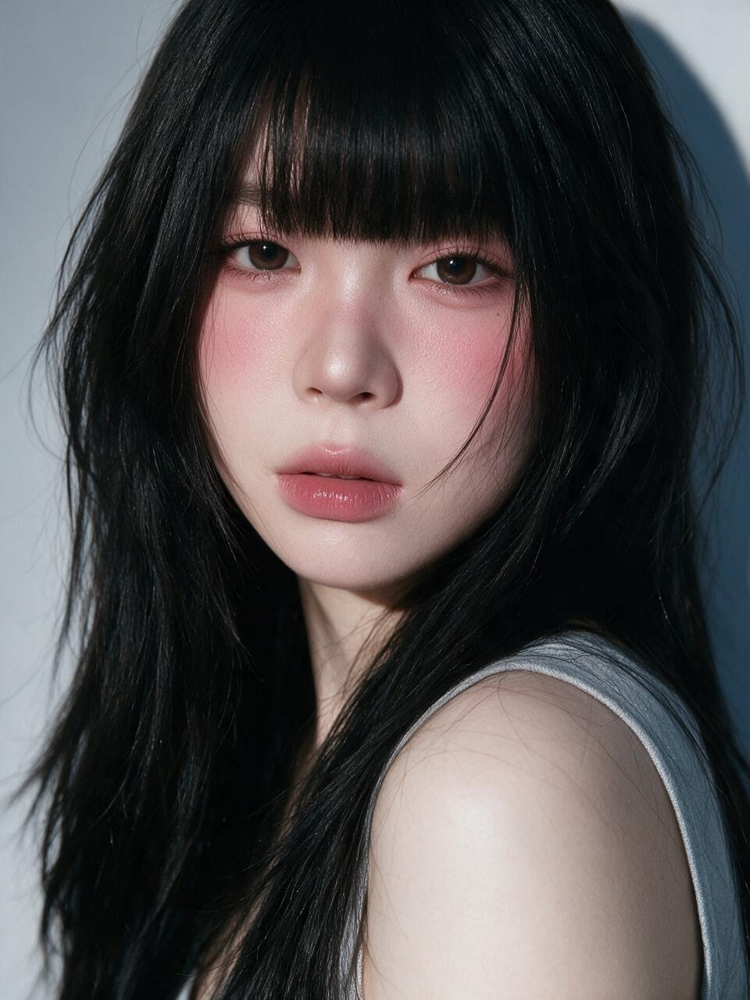
my own way ♡ YURIM
CREATIVE
STUDIO
scroll to discover
BEAUTY CREATOR · CONTENT DIRECTOR · DESIGN STUDENT · BEAUTY CREATOR · CONTENT DIRECTOR · DESIGN STUDENT ·
01 / ABOUT ME
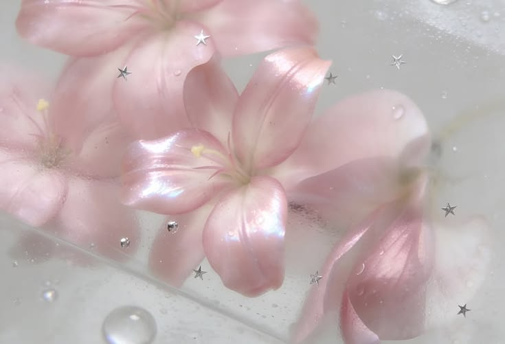
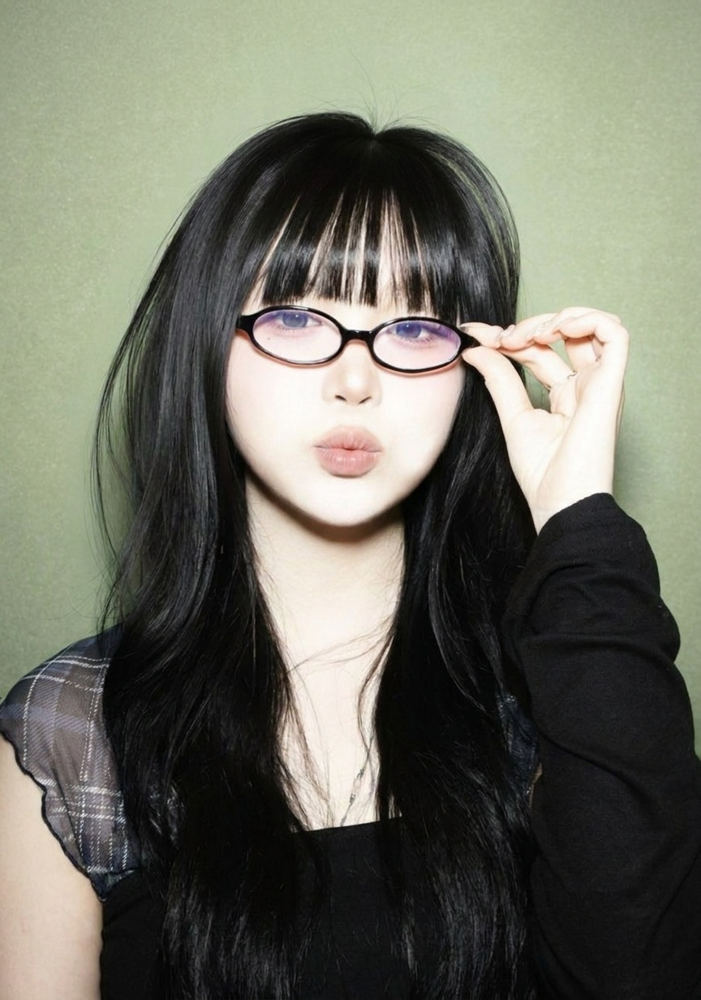
soft & lovely
Hello, I’m Yurim
아름다움을 발견하고,
감각적인 콘텐츠로
이야기해요.
안녕하세요. 뷰티를 사랑하는 디자인 전공자 김유림입니다. 제품이 가진 무드와 매력을 세심하게 발견하고, 릴스와 비주얼 콘텐츠로 표현하는 일을 하고 있어요.
기획부터 촬영, 스타일링, 편집까지 직접 진행하며 브랜드의 결에 제 취향을 자연스럽게 더한 콘텐츠를 만듭니다.
MajorDesign BusinessBased inJinju, KoreaFocusBeauty & Design
김유림의 포트폴리오 ✨🎀
02 / SELECTED WORK
Beauty, framed
my way.
프로젝트부터 영상과 SNS 콘텐츠,
포스터와 제작물까지 한곳에 담았습니다.
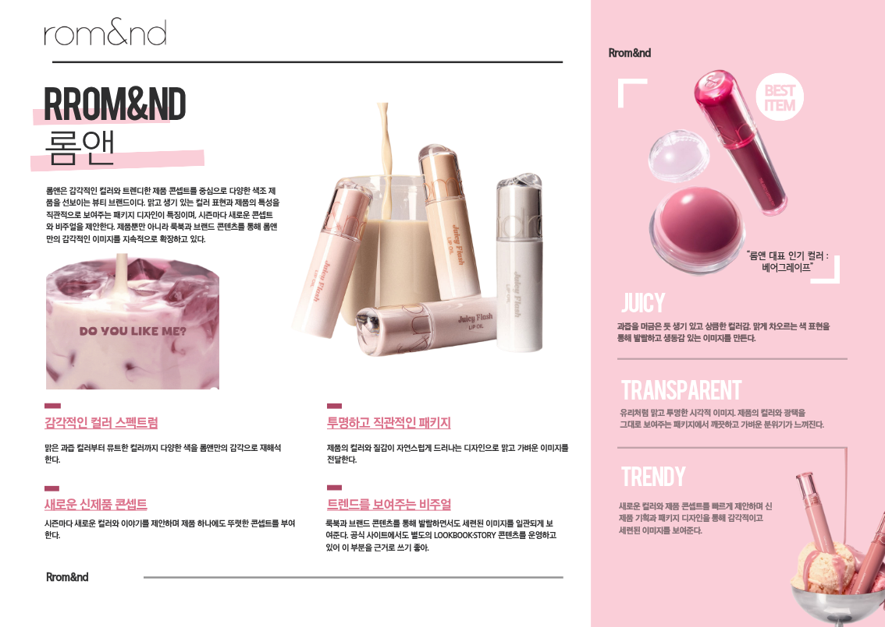
PROJECT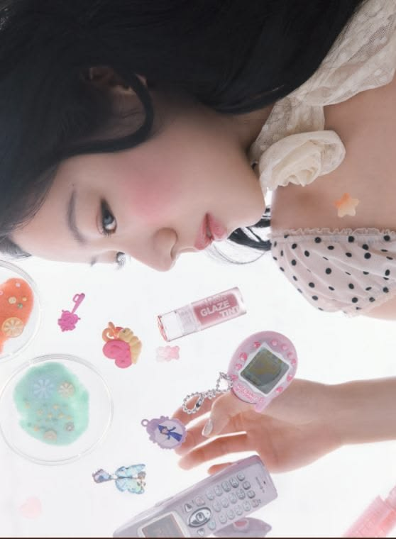
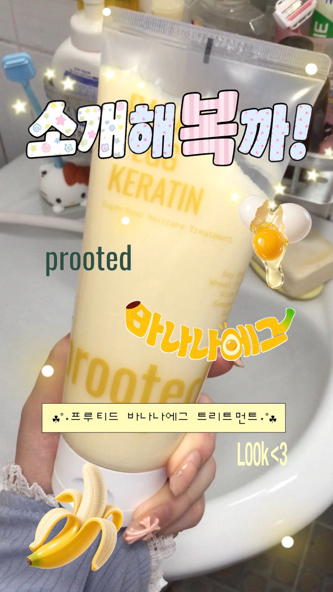
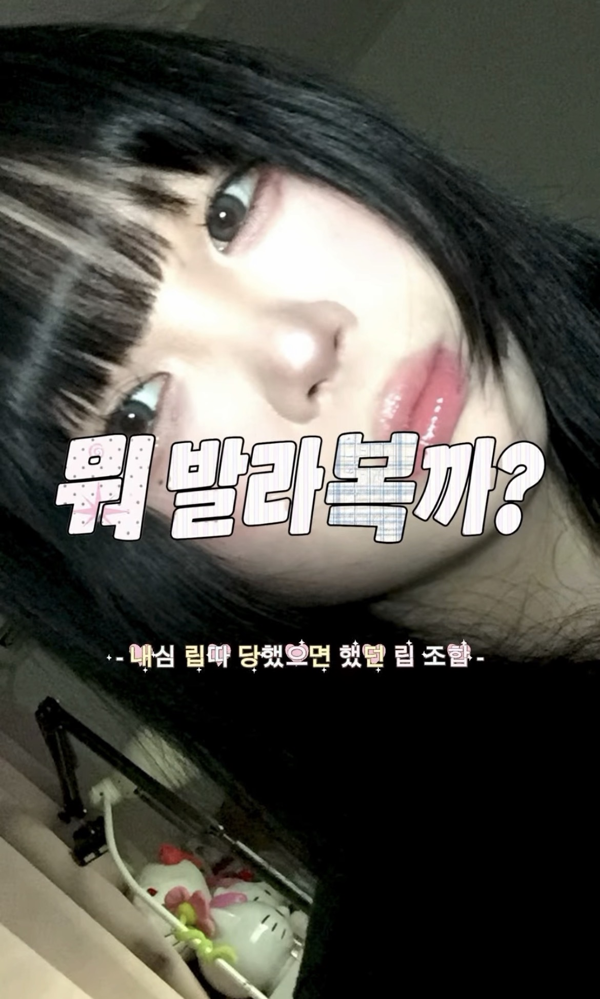
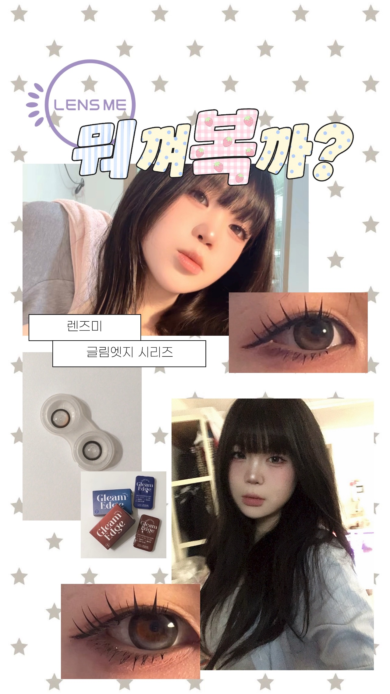
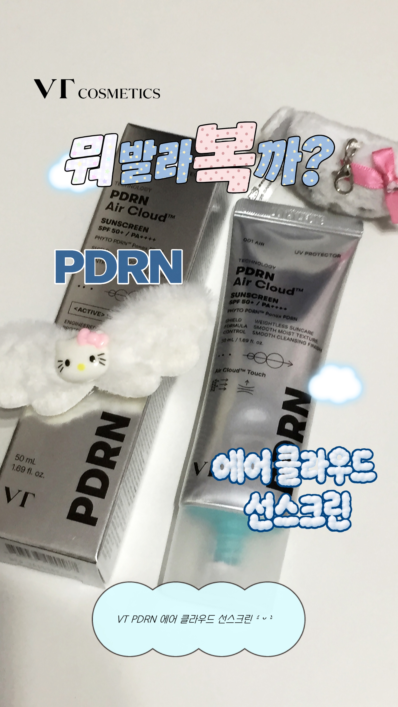
POSTER
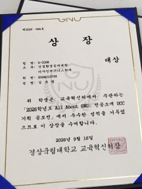
AWARD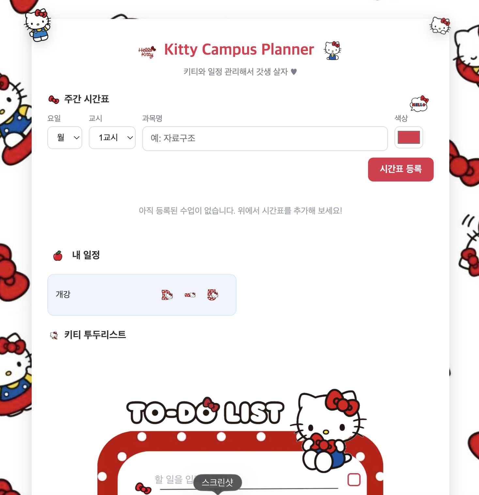
AWARD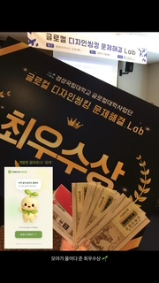
AWARD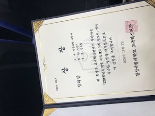
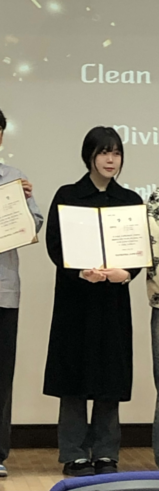
AWARD수상 내역을 준비 중입니다.
03 / WHAT I DO
Create with me
브랜드의 무드를
유림의 감도로.
01
Beauty Reels
제품의 텍스처와 컬러가 돋보이는 숏폼 영상 기획·촬영·편집
→02
Brand Collaboration
브랜드 메시지와 크리에이터의 취향을 연결하는 협업 콘텐츠
→03
Visual Direction
콘셉트 기획, 소품 스타일링, 무드보드와 비주얼 디렉팅
→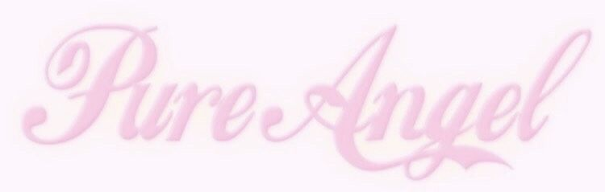
daily beauty archive
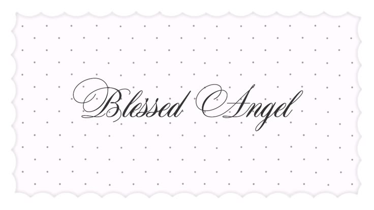
collaboration welcome
Let’s make something pretty
함께 반짝이는 장면을
만들어 볼까요?
브랜드 협업, 제품 협찬, 콘텐츠 제작 문의를 기다리고 있어요.
yulzzi0319@naver.com